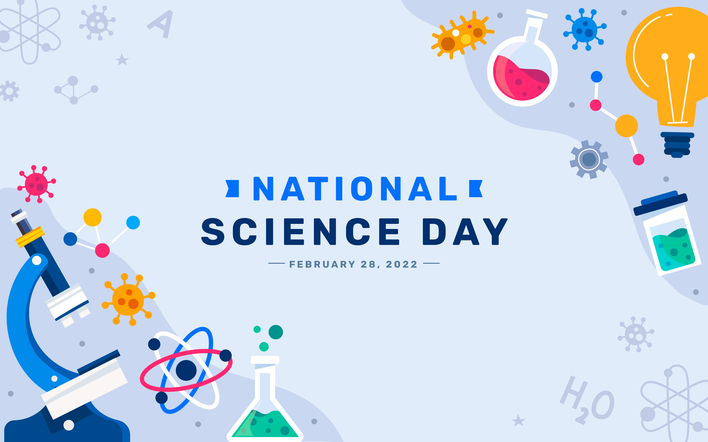
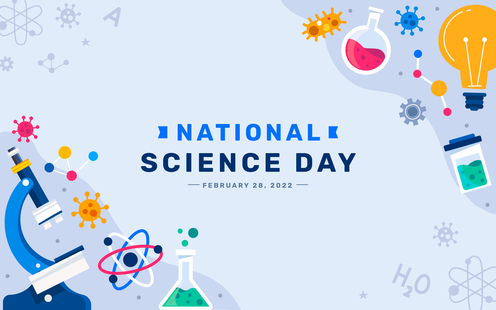
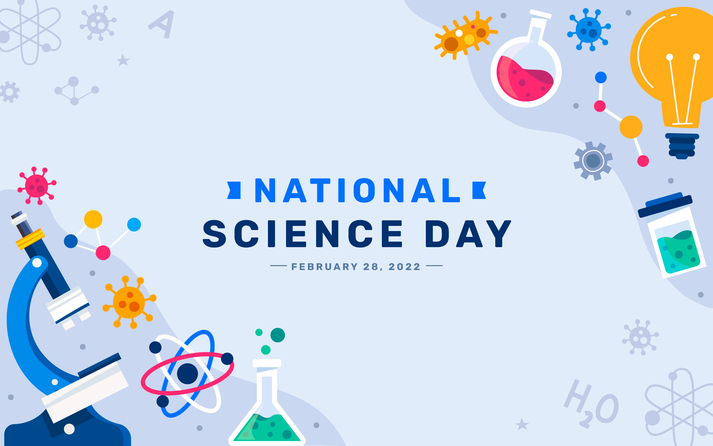

Presenting at Gordon Research seminar on Soft Condensed Matter Physics (August, 2023)

Presenting at Gordon Research seminar on Soft Condensed Matter Physics (August, 2023)
Hi, my name is Sufiyan Ahmad and I am a Postdoctoral researcher at the Bhamla Lab at Georgia Tech, Atlanta. My Postdoctoral advisor is Saad Bhamla.
I am currently studying various entangled and knotted systems, ranging from tangled fibers to knotted worms.
I did my doctoral work at IIT-Bombay in the broad area of experimental nonlinear dynamics.
I finished my Masters in Physics at IIT-Bombay with an experimental thesis on Stochastic Resonance.
My Bachelors in Science with Physics (Hons.) was from S.G.T.B. Khalsa College, University of Delhi.
2016 – 2022
Ph.D. – Physics, IIT Bombay
2014 – 2016
M.Sc. – Physics, IIT Bombay
2011 – 2014
B.Sc. (Hons.) – Physics, University of Delhi